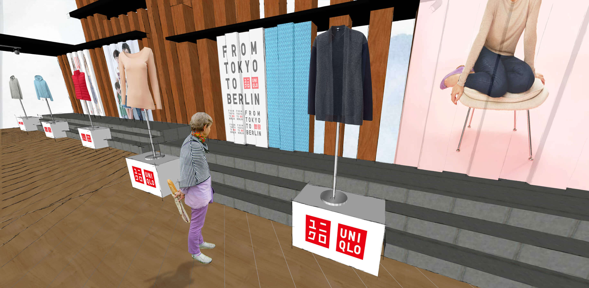
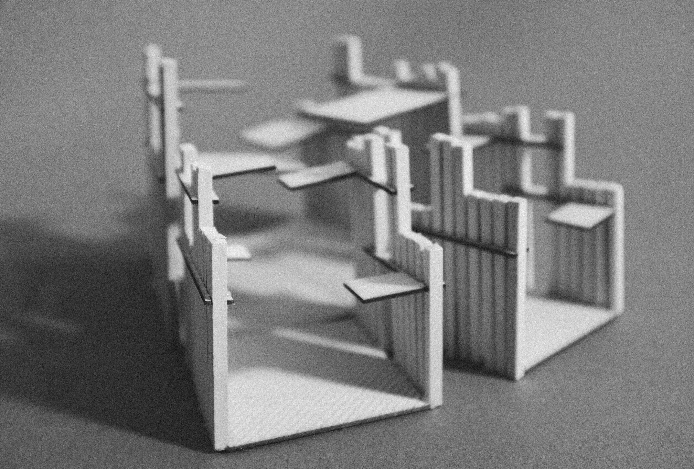
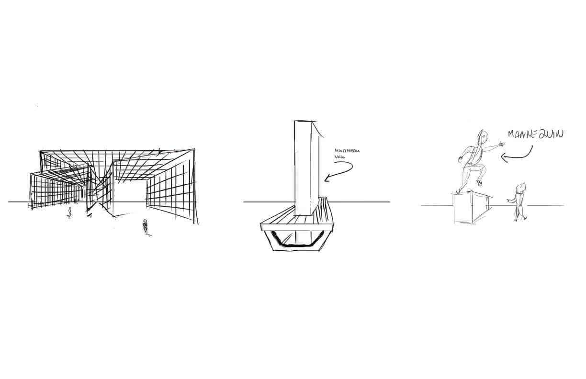
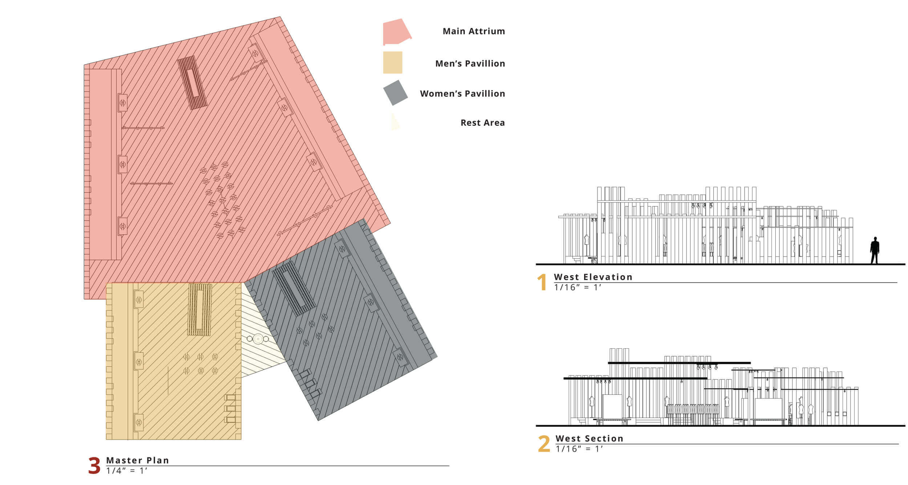

<!DOCTYPE html>
<html></html>
    <head>
        <meta charset="utf-8">
        <meta http-equiv="X-UA-Compatible" content="IE=edge">
        <meta name="viewport" content="width=device-width"/>
        <title>Peter An-Designer</title>
        <link rel="stylesheet" href="uniqlo.css">
        <link rel="stylesheet" href="../owl-carousel/owl.carousel.css">
        <link rel="stylesheet" href="../owl-carousel/owl.theme.css">
    </head>

    <body>
            <header class="head">
           <a href="../index.html"><h5>The Design and Directory of Peter An</h5></a>
            <h5 class="end"><a href="archive.html">Archive</a></h5>
        </header>
        <div class="container">
        <div id="owl-demo" class="owl-carousel owl-theme">
            <div class="item">
            </div>
            <div class="item">
            </div>
            <div class="item3">                     </div>
            <div class="item4">                     </div>
             <div class="item4">                     </div>
              <div class="item5">                     </div>
             <div class="item5">                     </div>
            <div class="item5">                     </div>

</div>

            <div class="text">
        <div class="descript">
            <p>Uniqlo Day x Day is an exploration of the self expression we display when we get dressed for the day. At its core the concept is an exploration on the daily act of dressing and preparing for the day, putting on clothes and minding the fabric we use. It was also an opportunity to showcase Uniqlo's F/W collection and the versatility of the technical fabric Uniqlo uses in their clothing. The exhibit is divided into 3 main sections, Men's Pavillon, Women's Pavillon, and the Main Atrium.

As the patron progresses through the exhibition they are greeted with podiums displaying mannequins wearing clothing specific to that time of day, activity, or situation.
        </div>
        <div class="info">
        <p><span>Project Name : Uniqlo Day x Day</span></p>
             <p><span>Type : Exhibition Design, Interiors, Physical Modeling </span></p>
             <p><span>Tools Used : SketchUp, Illustrator, Photoshop, Lasercutter</span></p>
            </div>
        </div>
    </div>

    <footer>
         <h5 class="footer-links"><a href="https://medium.com/@peetparkaa" class="foot-1">scripts</a></h5>
       </footer>

    <script src="https://ajax.googleapis.com/ajax/libs/jquery/1.12.0/jquery.min.js">
</script>
<script src="../owl-carousel/owl.carousel.js"></script>

<script>
    $(document).ready(function() {
  $("#owl-demo").owlCarousel({

      navigation : true, // Show next and prev buttons
      slideSpeed : 300,
      paginationSpeed : 400,
      singleItem:true
  });
});
    </script>
    </body>
</html>
